Every analysis starts with a well-built table. In this block you import a file, paste a table or open an example; check the type of each variable, which decides how it is analyzed; create computed and transformed variables; filter rows without deleting them; change the shape of the table; and read what SigmaPro recognizes in the design of the trial. At the bottom, depending on what the table contains, the block suggests the suite app that can continue the work. None of this touches the original file.
While there are no data, the block shows its toolbar and, below it, a box with the three most common ways to begin. The toolbar buttons do the same and stay in view once a table is loaded.
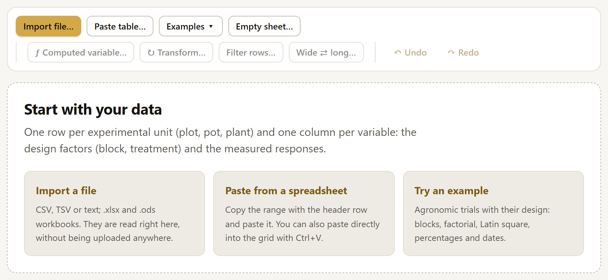
| Button | What it does | Section |
|---|---|---|
| Import file… | Opens a text file (CSV, TSV, TXT) or a spreadsheet workbook (.xlsx, .xlsm, .ods). The file is read on your computer; it is not uploaded anywhere. | 2.3 |
| Paste table… | Takes a range copied from a spreadsheet, with its row of names. | 2.4 |
| Examples ▾ | Opens one of the 27 example trials, each one designed for a type of analysis. | 2.5 |
| Empty sheet… | Creates a blank table with the column names and the number of rows you ask for, for entering data by hand. | 2.4 |
Loading new data replaces the previous table. If the previous one had changes, the report and the open analyses are recomputed with the new data; that is why it is a good idea to save the project (chapter 7) before switching to another trial.
SigmaPro reads the table layout that almost all statistics programs require: one row per experimental unit (the plot, the pot, the plant, the animal) and one column per variable. The columns are of two kinds: those that describe the design (block, treatment, variety, rate, date) and those that were measured (yield, height, number of fruits).
| bloque | hibrido | dosis | rend |
|---|---|---|---|
| 1 | H-40 | 0 | 4.61 |
| 1 | H-40 | 60 | 5.71 |
| 1 | H-40 | 120 | 6.41 |
| 1 | H-40 | 180 | 6.56 |
| 1 | H-52 | 0 | 4.80 |
| One row of names, at the top | Short names, with no repeats: rend, altura_30dds, peso_seco. Spaces and accents are allowed, but simple names read better in formulas and in R code. |
| Nothing else on the sheet | No titles above the table, no totals below it, no merged cells and no notes at the side. |
| Missing values, left empty | An empty cell is a missing value. NA, . and - are also accepted, or the codes you specify when importing. Never a zero in place of a lost value. |
| One type per column | A yield column with numbers only; if there is a stray text (“s/d”, “lost”), it is taken as missing and the app tells you so. |
| Clear group codes | If the block or the treatment was written with numbers (1, 2, 3), check that the app has taken it as a factor (section 2.7). |
| Long format | If the same variable was measured several times (dates, years, harvests), one row per measurement. If the table comes in wide format (one column per date), the block converts it (section 2.11). |
Import file… opens the system’s file picker. SigmaPro accepts:
Before anything is loaded, the Import data window shows how the table will look:
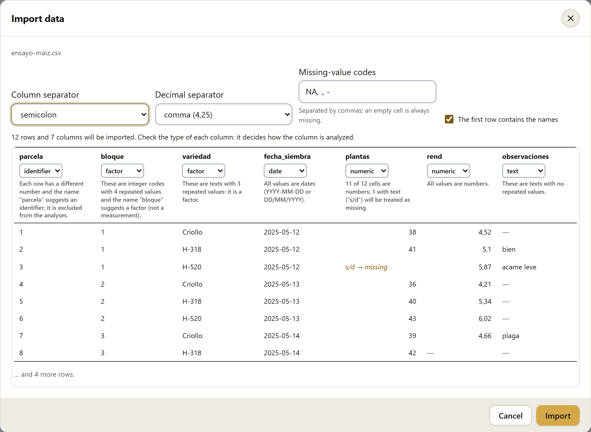
| Option | What it is for |
|---|---|
| Column separator | Comma, semicolon, tab or vertical bar (text files only). If the preview shows everything in a single column, the separator is not the right one. |
| Sheet | In a workbook, the sheet to import. |
| Decimal separator | Point (4.25) or comma (4,25). In Mexico the point is the usual one; files from other countries, or from spreadsheets set to Spanish (Spain), use a comma. |
| Missing-value codes | The texts that mean “no data”, separated by commas (by default NA, ., -). An empty cell is always missing. |
| The first row contains the names | If you uncheck it, the columns are named V1, V2… and the first row is taken as data. |
| Type of each column | The selector above each column. What you choose here prevails; the app only proposes (section 2.7). |
The preview shows the first eight rows as they will be: numbers with the chosen decimal separator, dates in the form YYYY-MM-DD and, in another color, each cell that cannot be converted and will become missing (s/d → missing). When you press Import, the table is loaded and the block moves to the worksheet. If any numeric column had stray texts, a notice says so, and the explanation of that variable tells how many there were.
SigmaPro works with a copy in memory. No change made in the block (types, new columns, filters, edited cells) is written to the file that was imported. To save the table with its changes, use the .labg project (section 7.6), which also includes the data as CSV.
Paste table… opens a text box where you paste, with Ctrl+V, a range copied from a spreadsheet (with its row of names). When you press Continue, the same import window from the previous section appears, with tab as the separator. It is the quickest way to bring in some data without saving a file first. You can also paste directly onto the empty grid: the app recognizes it as a new table and opens the same window.
Empty sheet… asks for the column names, separated by commas (by default bloque, tratamiento, rend), and the number of rows (up to 100,000). Columns whose name suggests a design factor (bloque, tratamiento, variedad, repetición, lote…) start as factors; the rest, as numeric. Then you type in the grid as in any spreadsheet (section 2.6).
Examples ▾ drops down the list of example trials, with a line that says what each one is for. Six are published data (Mendel, Box and Cox, Yates, Cornell and two from an R package for multi-environment trials); the rest are fictitious, built so that each analysis has a clear case. All the results in this manual come from them, so any number can be reproduced with a click.
| Example | Rows | Design and variables | For |
|---|---|---|---|
| Maize: hybrids × nitrogen | 48 | 3 × 4 factorial in 4 blocks; yield (t/ha) | ANOVA, comparisons, polynomials, figures |
| Bean: germination (%) | 20 | 5 treatments, 4 boxes of 50 seeds | Arcsine, binomial model |
| Wheat: 5 × 5 Latin square | 25 | 5 varieties, rows and columns | Latin square |
| Tomato: height in the greenhouse | 18 | 3 substrates; height at 15, 30, 45 and 60 days, in wide format | Wide → long, dates, missing values |
| Avocado: thrips per shoot | 30 | 5 treatments in 6 blocks; counts with zeros | √(x + 0.5), count models |
| Poisons × treatments | 48 | Box and Cox (1964): 3 poisons × 4 treatments | Box-Cox transformation |
| Pea: Mendel’s segregation | 4 | Mendel (1866): 556 seeds already counted | 9:3:3:1 goodness of fit |
| Oats in a split plot | 72 | Yates (1935): 3 varieties × 4 N rates, 6 blocks | Split plots |
| Sorghum: varieties and plants | 24 | 6 varieties in 4 blocks; harvested plants | ANCOVA |
| Coffee: yield and site | 40 | 40 farms with 7 site variables | Multiple regression, variable selection |
| Bean: treated seed in four lots | 16 | Germination by lot and treatment, already counted | Contingency, Cochran-Mantel-Haenszel |
| Rust: two raters | 80 | Severity 0 to 3 scored by two technicians | Kappa, Bowker |
| Alpha-lattice: 24 genotypes | 72 | Olivoto and Lúcio (2020): 3 replicates, blocks of 4 | Mixed lattice, heritability |
| Oats in 14 environments | 420 | Olivoto and Lúcio (2020): 10 genotypes, 3 replicates | Multi-environment, stability, AMMI, GGE |
| Maize: height on five dates | 80 | 4 rates in 4 blocks; the same plant on 5 dates | Repeated measures |
| Guava: 20 trees, four harvests | 80 | Kilograms per tree and harvest, with 5 missing | Repeatability |
| Herbicides: dry weight by dose | 56 | 7 doses of 2 herbicides, 4 replicates | Dose-response (ED50) |
| Tomato: nitrogen × potassium | 13 | Rotatable central composite with 5 center points | Response surface |
| Avocado: sampling in three orchards | 38 | Random trees from 3 orchards; weight and thrips (0/1) | Stratified sampling |
| Bean: days to germination | 120 | 3 treatments; days until germination, with censoring | Kaplan-Meier, log-rank, Cox |
| Weather station: rainfall and temperature | 96 | Monthly values from 2017 to 2024 | Time series, ARIMA |
| Chili pepper: fruit measurements | 60 | 4 varieties in 3 blocks, 5 fruits per plot | MANOVA, discriminant analysis |
| Yarn: elongation of three polymers | 15 | Cornell (2002): {3, 2} simplex-lattice with replicates | Mixtures (Scheffé models) |
| Fruit: yield, cost and pH | 13 | Rotatable central composite: nitrogen × irrigation, three responses | Surfaces, desirability |
| Wheat: irrigation × variety | 48 | 3 irrigation depths (main plots) × 4 varieties, 4 blocks | Split plots, the assistant |
| Rice: irrigation × variety × nitrogen | 36 | Split-split plots in 3 blocks | Split-split plots |
| Sorghum: seven lines in incomplete blocks | 21 | 7 blocks of 3 plots; each pair of lines occurs together once (λ = 1) | Balanced incomplete blocks |
With a table loaded, the block is divided into three parts: the list of variables on the left, the grid with the data in the center and, below the list, the details of the selected variable. Figure 2.3 points them out.
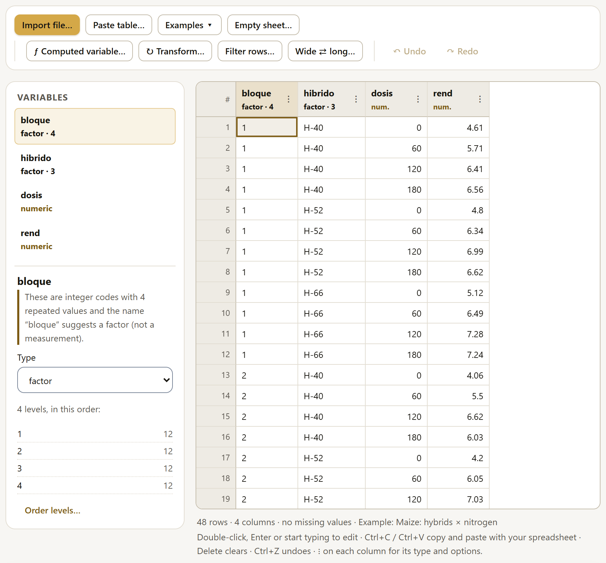
1234567Each variable in the list shows its type in color (factor · 4 means a factor with four levels), its missing cells if there are any (2 miss.) and a mark if it is computed (ƒ) or transformed (↻). When you select one, the details show:
If a filter is active (section 2.10), these summaries are computed only with the rows that pass the filter.
The grid works like a spreadsheet and is operated with the keyboard. It draws only the visible rows, so a table of 100,000 rows scrolls just as fast as one of 100.
| Keys | What they do |
|---|---|
| Arrows, Home, End, Page Up, Page Down | Move around the table; Ctrl+Home and Ctrl+End go to the first and to the last cell. With Shift, you select a range. |
| Double-click, Enter, F2 or start typing | Edit the cell. Enter saves; Esc cancels. |
| Tab and Shift+Tab | Next and previous cell. |
| Delete or Backspace | Clear the selected cells (they become missing). |
| Ctrl+C and Ctrl+V | Copy and paste ranges to and from a spreadsheet, separated by tabs. |
| Ctrl+Z and Ctrl+Y | Undo and redo. |
| Ctrl+A | Select the whole table. |
What you type in a cell is interpreted according to the type of the column: in a numeric column, a text that is not a number is not accepted and the app explains why (for a lost value, leave the cell empty); in a date column, YYYY-MM-DD and DD/MM/YYYY are accepted. When you paste a range, the cells that do not match the type of their column are left as they were and a notice says how many there were. When the table has unsaved changes, the browser asks before closing the tab.
The type of a column decides how it enters the analyses. It is the most important decision in the block: a block written with numbers (1, 2, 3, 4) and taken as numeric turns a block analysis into a meaningless regression.
| Type | What it is | How it enters the analyses |
|---|---|---|
| numeric | A measurement: yield, height, weight, count, percentage. Also a rate that you want to study as a curve. | As a response or as a covariate. A numeric rate with few repeated values can also be used as a design factor (the analysis offers this). |
| factor | A group: block, treatment, variety, lot, site, year of the trial. | As a design factor; its levels have an order that decides the order of the means in tables and figures. |
| date | A date (sowing, transplanting, harvest), in YYYY-MM-DD or DD/MM/YYYY. | To order time series and to compute days between dates; never as a design factor. |
| text | Free notes, with no repeated values. | It does not enter, unless it is used explicitly; then it counts as a factor. |
| identifier | The key of each unit: plot number, record number, plant. | It does not enter the analyses. It serves to recognize each row and, in the long table, as the subject of the repeated measures. |
When importing, SigmaPro proposes a type for each column and always explains why. The rules, in order:
If a column of integers with few values does not have a recognizable name (for example T or grupo2), the app leaves it as numeric and warns you: “These are numbers, but there are only 4 distinct repeated values: if they are group codes, change it to a factor”. It is worth reading the reason for each variable once, when you load the data.
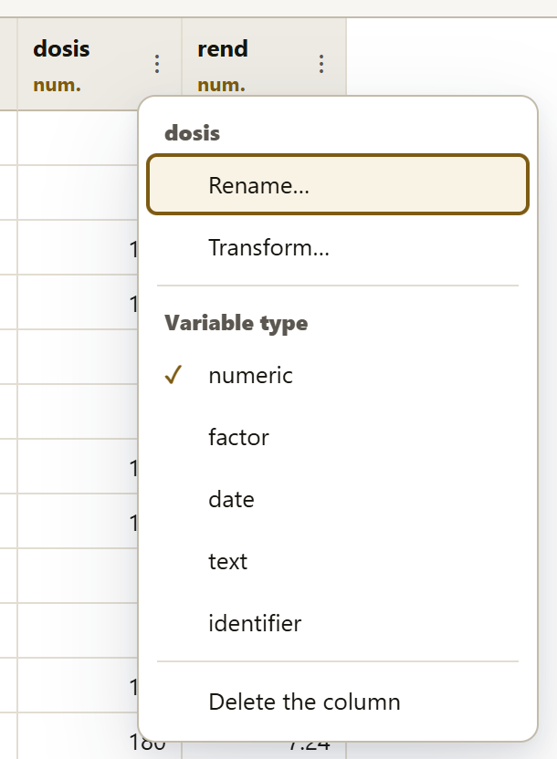
The ⋮ button next to the name of each column opens its menu:
When you change a column to numeric or to date, the values that cannot be converted become missing and a notice says how many; the change can be undone.
The order of the levels decides the order of the means in tables and figures, and which one is the reference level: the first one, against which the others are compared in a Dunnett test, in Cox hazard ratios or in the coefficients of a model. That is why it is a good idea to put the control first.
The Numeric, Alphabetical and As they appear buttons sort them all at once; the ↑ and ↓ arrows move one level. Apply saves the order (and it can be undone).
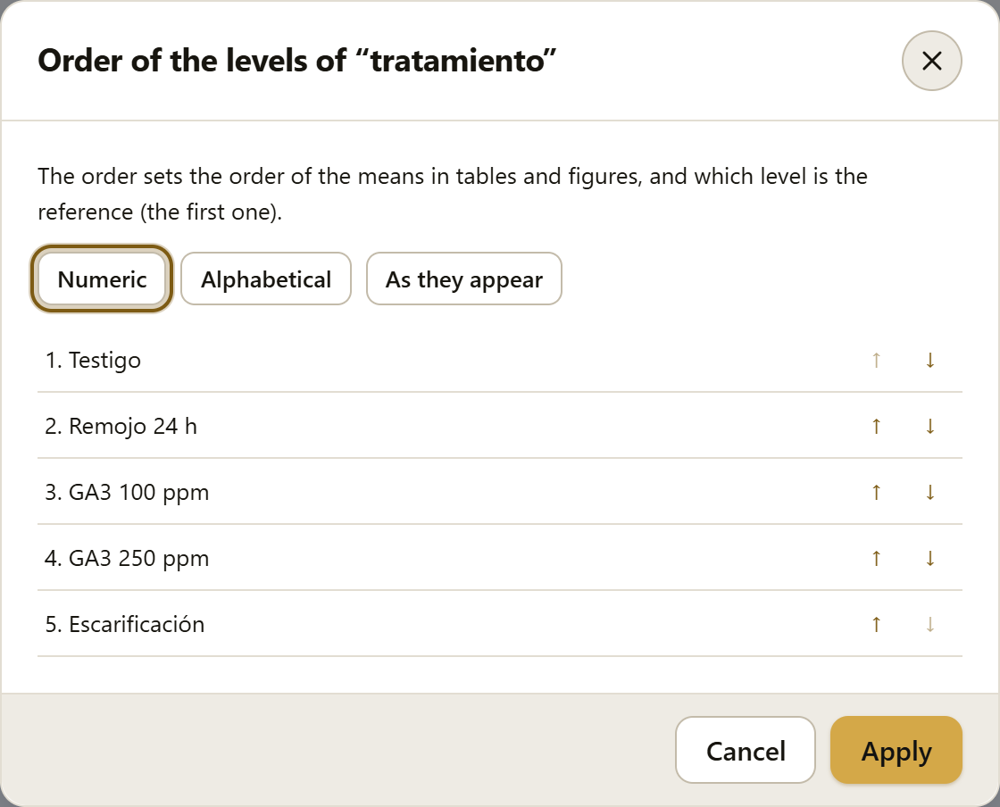
ƒ Computed variable… creates a new column from the existing ones, with an expression written in the same notation as R. As you type, the window shows whether the expression is valid, what type of column it will give and its first values; a click on the name of a column or of a function inserts it at the cursor.
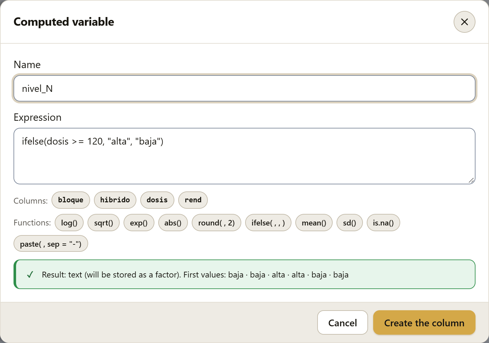
= 120, alta, baja); the column and function buttons; and the preview: text that will be stored as a factor, with the first values baja, baja, alta, alta">| You write | It means |
|---|---|
+ - * / ^ and %% | Addition, subtraction, multiplication, division, power and remainder of the division. |
== != < <= > >= | Comparisons (they give true or false). |
& | ! | And, or, not. |
x %in% c("a", "b") | Membership in a list. |
`peso seco` | A name with spaces, between backticks. |
log(x), log(x, 10), log10, log2, log1p, exp, sqrt, abs | Logarithms (natural by default), exponential, square root and absolute value. |
round(x, 2), floor, ceiling, trunc, sign | Rounding and sign. |
sin, cos, tan, asin, acos, atan | Trigonometric functions (in radians). |
pmin(a, b), pmax(a, b) | The smaller or the larger, row by row. |
ifelse(cond, yes, no) | One value if the condition holds and another if it does not. |
is.na(x), as.numeric(x) | Is the value missing? · Convert to a number. |
paste(a, b, sep = "-"), paste0 | Join texts (for example, to combine two factors). |
mean, sd, var, median, min, max, sum, length | Summaries of the whole column: they give a single number, which is repeated in every row. |
Some functions also have a Spanish name: raiz, si (= ifelse), media, de (= sd), mediana, minimo, maximo, suma, varianza, redondear, exponencial, absoluto and faltante (= is.na).
rend * 1000 / 10.5 | Kilograms per hectare from a plot of 10.5 m² (if rend were in kg/plot). |
(rend - mean(rend)) / sd(rend) | Standardized yield. |
germinadas / sembradas * 100 | Germination percentage. |
ifelse(trips == 0, "sin", "con") | Presence or absence (stored as a factor). |
paste(hibrido, dosis, sep = "_") | A factor with the 12 combinations of hybrid and rate. |
The result is stored according to what the expression gives: a number, as a numeric column; a text, as a factor; a true or false, as a factor with the levels VERDADERO and FALSO (Spanish for TRUE and FALSE). Missing values follow R’s rules: any operation with a missing value gives a missing value, and NA & FALSE is FALSE. One difference from R: summaries (mean, sd…) ignore missing values unless you write na.rm = FALSE, because that is almost always what you want.
When the residuals of an analysis do not have constant variance or are not normal (chapter 4, the assumptions), a transformation of the response often solves the problem. ↻ Transform… creates a new column with the transformed variable; the original does not change, so the two analyses can be compared.
| Transformation | When it helps |
|---|---|
| ln(x) | Positive data whose standard deviation grows in proportion to the mean (weights, biomass, pathogen loads). |
| log₁₀(x) | The same, in base 10 (easier to read in orders of magnitude). |
| ln(x + c) | When there are zeros. You choose the constant c (1 by default). |
| √x | Counts whose variance is proportional to the mean (Poisson distribution). |
| √(x + 0.5) | Counts with zeros or with small values (insects, weeds, lesions). |
| asin(√p) | Proportions and percentages (germination, incidence, mortality). The window detects whether the data are in percent (0 to 100) and lets you choose the result in degrees or in radians. |
| 1/x | Times (days to flowering, to germination) whose variance grows strongly with the mean. |
| Box-Cox | When you do not know which one to use: it estimates the power that best stabilizes the variance and normalizes the residuals. |
| (x − media)/DE | Convert to standard deviation units (to compare variables on different scales). |
The Box and Cox (1964) transformation is a family of powers, xλ, that includes the previous ones as special cases: λ = 1 leaves the data as they are, λ = 0.5 is the square root, λ = 0 the logarithm and λ = −1 the reciprocal. The value of λ is estimated by maximum likelihood from the residuals of the experiment’s model, not from the raw data: what must be stabilized is the variation within treatments, not the difference between them.
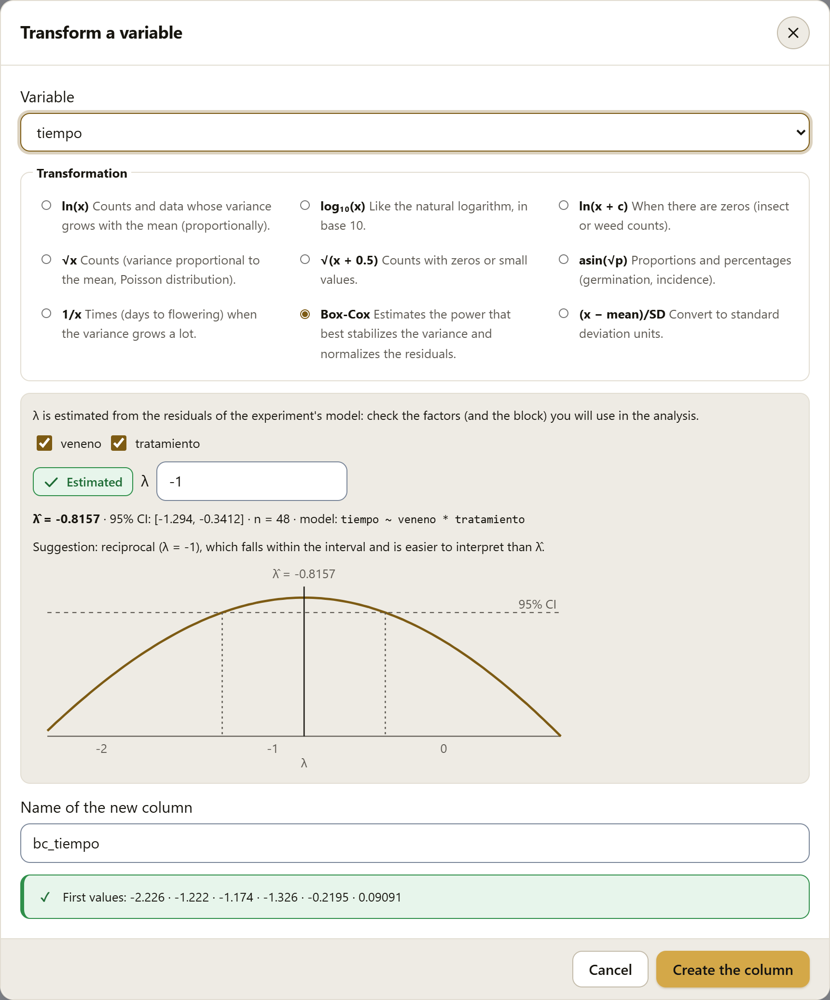
tiempo ~ veneno * tratamiento.The means and their differences are on the transformed scale. To present them in the original units, apply the inverse transformation to the means (for example, square the means of √x), bearing in mind that the result is a median, not a mean. An alternative that avoids the problem is generalized linear models (section 4.17), which model counts and proportions on their own scale.
Filter rows… leaves out of the analyses the rows that do not meet a condition, without deleting them. It is useful for analyzing a single site of a multi-site trial, removing a damaged block or excluding plots with a recorded problem. The condition is written in the notation of section 2.8, and the window tells you instantly how many rows pass.
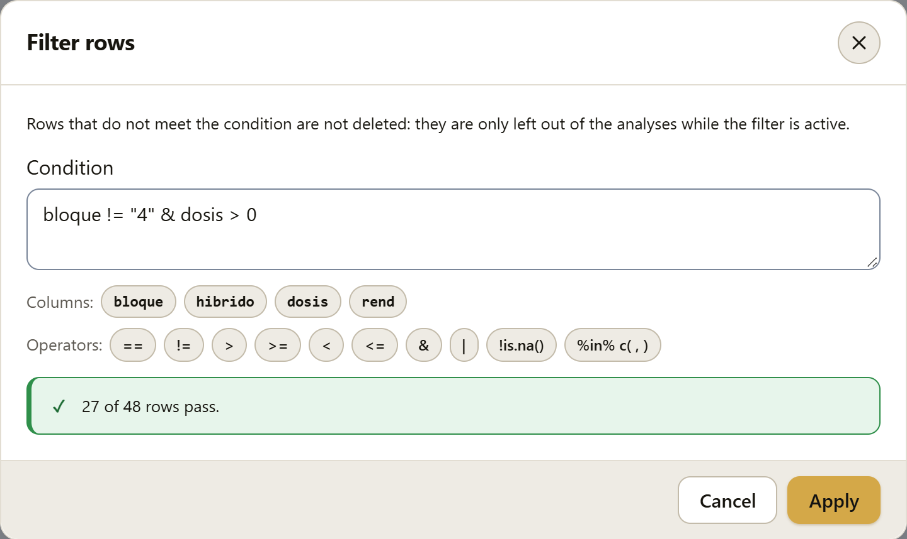
0, the column and operator buttons, and the result: 27 of 48 rows pass">With the filter active, a notice above the grid reminds you of it, with the condition and how many rows pass, and the Remove the filter button. The rows that do not pass remain in the grid, hatched and with their number struck through; you can still see and correct them.
Everything that comes afterward uses only the rows that pass: the summaries in the details, the diagnosis in section 2.13, Explore, Analysis and the report. The .labg project saves the filter condition.
Some useful conditions:
sitio == "Norte"bloque != "4"!is.na(rend)hibrido %in% c("H-52", "H-66")dosis > 0 & dosis < 180A row whose result is missing (for example, rend > 5 with rend empty) does not pass. A filter that leaves no rows is not applied.
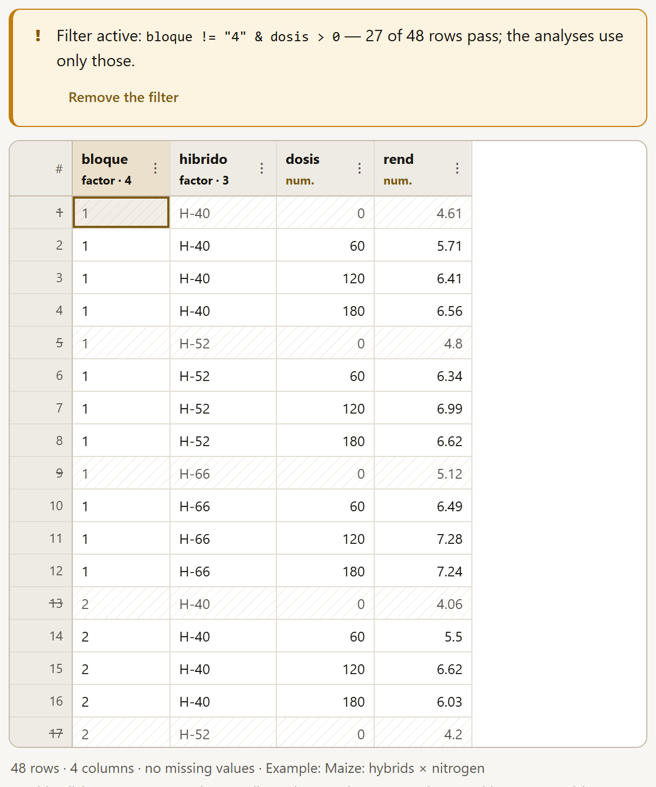
A variable measured several times on the same unit is often entered in wide format: one row per plant and one column per date (altura_15dds, altura_30dds…). The analyses require the long format: one row per measurement, with one column that gives the date and another with the value. Wide ⇄ long… makes the change in both directions.
dds, days after transplanting) and the values column (altura).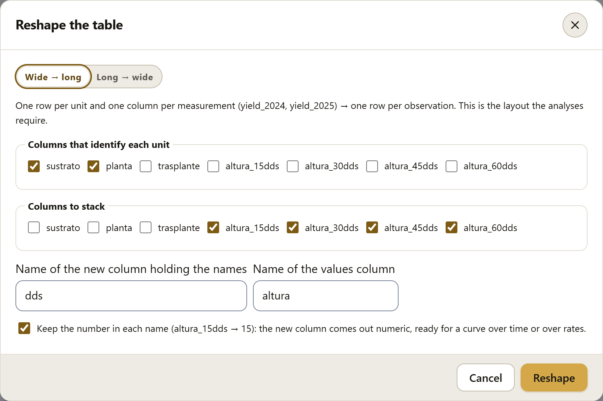
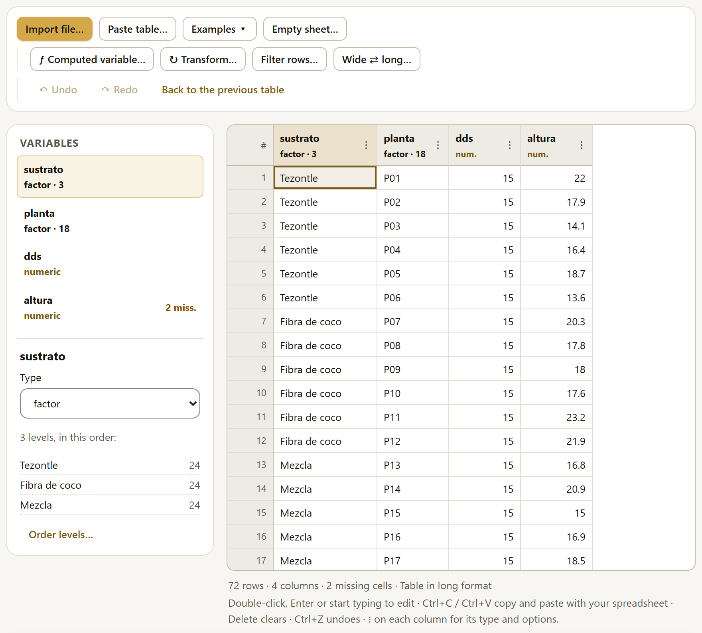
In Long → wide, choose the columns that identify each unit, the column whose values will name the new columns, and the column with the values. If a combination of identifiers is repeated, the app stops and explains why: the wide table would not know which value to use, and another column is needed to tell those rows apart.
Every change to the sheet (a cell, a paste, a type, a new or deleted column, an order of levels) can be undone with ↶ Undo or Ctrl+Z, and redone with ↷ Redo or Ctrl+Y. Hovering the pointer over the buttons shows what is about to be undone (“Undo: Change ‘dosis’ to factor”).
Reshaping the table creates a new table, and so does loading the example data with “See it in action” from the glossary (section I.6). To return to the previous table there is the Back to the previous table button, which appears in the toolbar for as long as you can go back.
At the end of the block, the What SigmaPro sees in your trial card summarizes the structure that the app recognizes in the table. It is the same reading that the assistant and the model builder (chapter 4) use to propose the analysis, and it is worth checking before you analyze: if something does not match the actual design, now is the time to correct a type or a column.
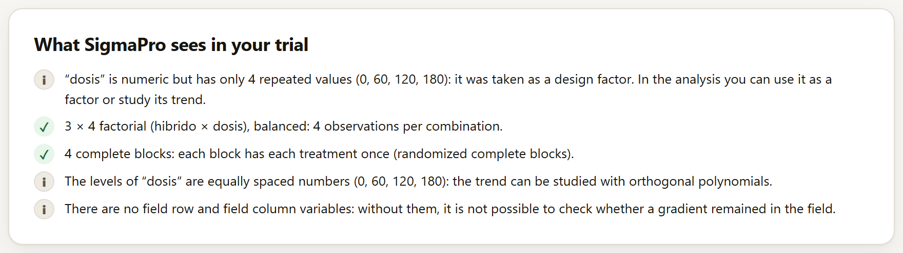
Each line carries a symbol: ✓ for what is fine, ! for what deserves attention and i for a note. What is checked:
| Check | What it may say |
|---|---|
| The response | Which column was taken as the response and whether it has missing values (the analysis will use the complete observations). |
| Columns that are not factors | An identifier (a different value in each row), subsamples (the number of the fruit or plant within each plot, 1, 2, …, which is not a treatment) or a numeric column with few repeated values taken as a design factor (a rate). |
| Combinations and balance | Whether it is a factorial and whether each combination has the same number of observations. If not, it warns that type I, II and III sums of squares will give different results (section 4.10); if there are empty combinations, that type III is not defined. |
| Blocks | Whether each block has all the treatments (randomized complete blocks), how many blocks are incomplete and whether a treatment appears more than once in a block. |
| Latin square | With row and column variables, whether each treatment appears once in each row and in each column. |
| Rates | If the levels of a numeric factor are equally spaced, that the trend can be studied with orthogonal polynomials (section 4.11). |
| The field | Without field row and field column variables, it is not possible to check whether a gradient remained in the field. |
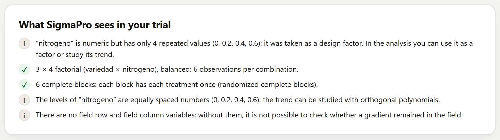
The card reads the table, not the field layout. A split-plot trial has the same columns as a factorial in blocks (figure 2.13): the difference lies in how it was randomized, and that is not recorded in the data. The same happens with repeated measures when there is no column that says which unit was measured. In those cases, you specify the design in the assistant, in the catalog or in the model builder (chapter 4); analyzing a split plot as a factorial in blocks would give wrong F tests for the main-plot factor.
If the table has a column that numbers the main plots (or the strips), with a name such as parcela, parcela_grande, pg, subparcela or franja, SigmaPro does not take it as a treatment and the assistant uses it to recognize split plots, split-split plots or strip plots on its own: if a factor does not change within each plot, it is the main-plot factor (section 4.2). The “Wheat: irrigation × variety” example comes this way. The card in this section does not say so; the assistant does, when it proposes the analysis.
Below the trial card, the Continue in the LABG suite strip may appear, with the sister app that makes use of the structure of the table. Each card says what it saw in the data and why that app is useful.
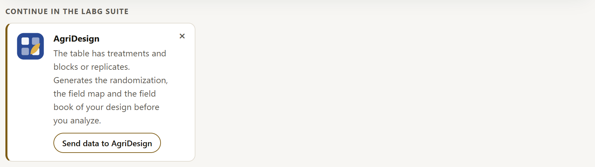
| If the table has… | It suggests |
|---|---|
| treatments and blocks or replicates | AgriDesign: the randomization, the field map and the field book of the design. |
| 8 or more numeric variables | PCAPro, CorrelationPro and ClusteringPro: reduce dimensions, see the relationships among many variables or form groups. |
| latitude and longitude columns | BioModellingPro: map the sites, extract climate and soil variables and model the distribution of a species. |
| dates | PhenologyPro: with dates and daily weather, degree days, evapotranspiration, phenological stages and frost risk. |
Send data to … saves the table in a CSV file (with the active filter, if there is one) and opens the app in a new tab; the data do not travel over the internet. The ✕ button hides that suggestion in this place. Chapter 10 explains all this in detail.